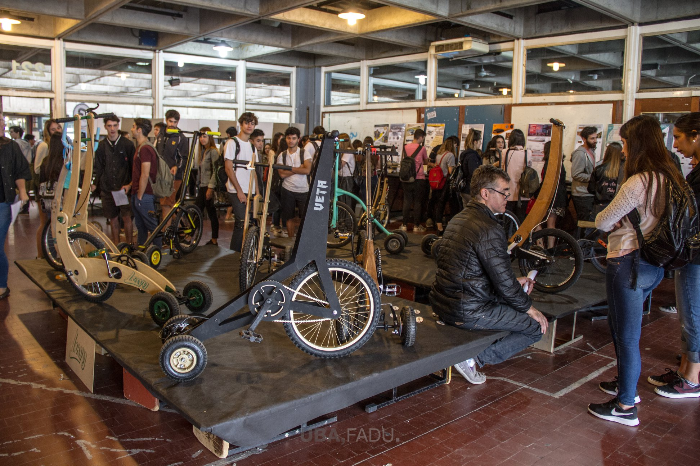

Crónica
EL DISEÑO Y LA CREATIVIDAD
Estudiando 10 años diseño de diferentes ramas llegue a la conclusion de que la creatividad es algo que lo tenemos todos, pero que necesita ser nutrida para que esta se manifieste,
el diseño es es la capacidad creadora de proyectar, planear,o hacer algo planificado.

Entrega en FADU
¿Es la creatividad un don?, existe la errada afirmacion de decir que la creatividad es un don que lo tienen ciertas personas, sin embargo es un elemento innato del ser humano,
que necesita ser despertado a traves de estimulos y procesos necesarios para que la creatividad se manifieste y poder empezar a controlarla, las profesiones de diseño son las
mas representativas de esta “particular capacidad” que es la creatividad, debido a una asociacion con el arte, y es claro que el diseño se nutre en grandes cantidades del las
corrientes artisticas de epocas pasadas, como el impresionismo, el expresionismo, el art noveau, los talleres de viena, la gran escuela de bauhaus, el constructivismo, el pop art,
y asi podriamos seguir nombrandolas.
La RAE define a la creatividad como la facultad y capacidad de crear, claramente todos somos capaces de crea, claramente como el Diego en el futbol existen grandes creativos,
y no necesariamente son diseñadores, pero ¿que nos aporta el diseño a la creatividad?, basandome en la propia experiencia del cronista quien les habla, les diria que es la
infinidad de posibles casos para un diseño, lo que hace que te rompas el coco pensando las mejor forma de hacer una cosa, analizando una y otra vez las variables, para reducir costos,
para que sea vistoso, para que sea funcional, y muchos etceteras.
Cuando inicie mi carrera de estudio de diseño alla por el 2011 no dimensionaba el abanico de posibilidades de que me daría el diseño, y como me nutriria y potenciaria mi escaza creatividad,
al poco tiempo en la facultad mi cabeza empezaba a hacer click, estar en un aula con 200 personas, viendo sus proyectos y sus ideas era algo sorprendente, todos casos distintos, todos con
sus cosas positivas y sus cosas negativas, pero todas con potencial de ser creadas. Luego de las correcciones a la siguiente clase podía notar el avance en los proyectos de mis compañeros
y los mios, el constante cuestionamiento acerca de diferentes situaciones relacionadas a los componentes que forman el objeto y la investigacion hacian que el proyecto vaya tomando forma,
que cada vez sea mas factible, mas coherente.
Asi como se crea un ser humano, donde hay actividades necesarias para que se geste el niño, la creacion de un objeto diseñado tiene que pasar necesariamente por un proceso, una serie de pasos,
donde se aplican distintas tecnicas, conocimientos y conceptos.
Luego de varias clases corrigiendo, llega la hora de hacer contacto fisico con el objeto y materializarlo, llevarlo a la realidad, a traves de maquetas o prototipos, verificar medidas, espacios,
y como se relaciona con el usuario. Luego, el momento menos esperado, la defensa del proyecto, aca debes sacar a relucir tu conocimiento del proyecto, contar de que se trata, todo lo que se tuvo en cuenta y venderselo a los profesores. Finalmente llegas a tu casa y te pones a pensar todo el proceso que atraveso la idea, desde que se disparo en la cabeza, hasta que la hiciste realidad, todos los apsectos que contemplaste y decis que interesante, no sabia que podia salir algo tan bueno, tan bien pensado, y eso para mi es la creatividad, exprimir hasta la ultima opcion para realizar una tarea, cualquiera sea, desde la manera mas rapida de secar un calzonsillo, hasta la forma de respirar en marte. La creatividad nace de un compromiso con lo que hacemos, y de realizarlo de la manera mas efectiva y una carrera de diseño te da las herramientas necesarias
para poder tener un proceso nutritivo, que no te cae del cielo, es necesario que te involucres y que lo hagas tuyo.